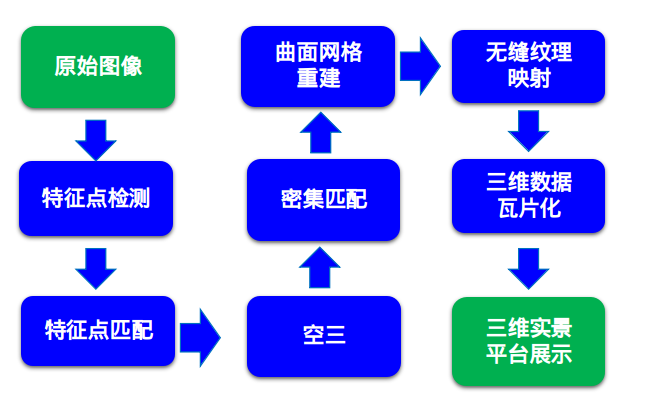
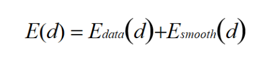
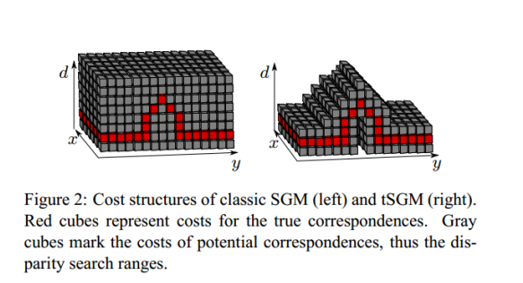
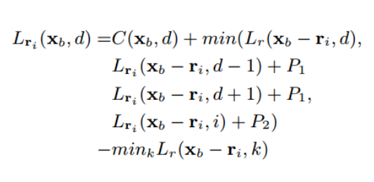
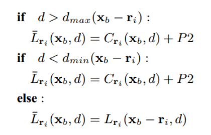
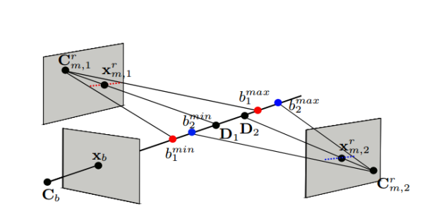

图像三维重建

整体流程
SGM based Stereo
双目立体匹配一般流程为
匹配代价计算
代价聚合
视差计算
视差进一步优化
全局优化、半全局优化主要是优化以下能量方程，求解视差d

Semi-Global Matching (SGM)1 采用动态规划的思想，把优化分解按照为个多个方向的分别优化。然而当图像分辨率较大，面临代价立方体过大，占用内存太多的问题，尤其不适于用GPU进行运算。tSGM2使用Coarse-to-Fine 策略，上层计算的视差范围传递到下层，下层只在视差范围内在做SGM优化。如下图，十分适合GPU并行加速运算。

tSGM方案
tSGM的核心思想：通过约束视差范围来减少内存使用和计算量
构建影像金字塔
从粗到细，下层为上层提供初始视差
构建一个视差非连续下的约束代价
某一方向的代价聚合公式如下；即在边界条件下使用原代价+P2来作为聚合后的代价。其他与SGM方式几乎一致。
 
代价聚合公式
SGM based Multi-View Stereo
当处理多视图的情况时，整体流程如下：
Select best N views for matching
Rectification images for each stereo pair
tSGM matching
Depth fusing
tSGM使用深度范围来进行深度图融合。Base image 每个像素与其他同名像素计算最优的深度范围，深度范围外的视差（深度）被过滤。如下图，Cb图像像素xb的深度范围是：


tSGM采用的多视图深度融合
[1] H. Hirschmuller, “Stereo Processing by Semiglobal Matching and Mutual Information,” IEEE Trans. Pattern Anal. Mach. Intell., vol. 30, no. 2, pp. 328–341, Feb. 2008, doi: 10.1109/TPAMI.2007.1166.
[2] M. Rothermel, K. Wenzel, D. Fritsch, and N. Haala, “SURE: Photogrammetric Surface Reconstruction from Imagery,” LC3D Workshop, pp. 1–9, Jan. 2012.